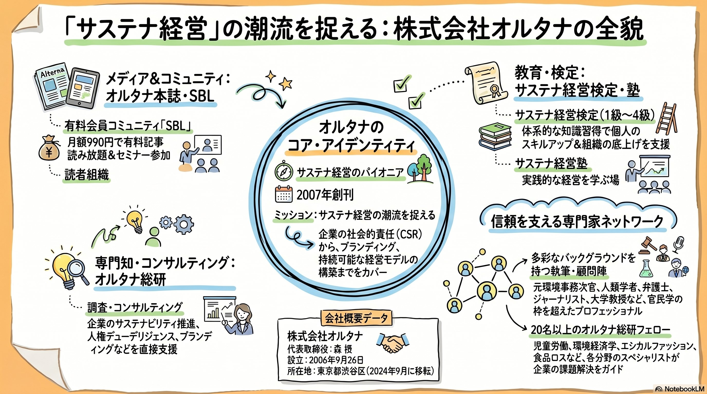
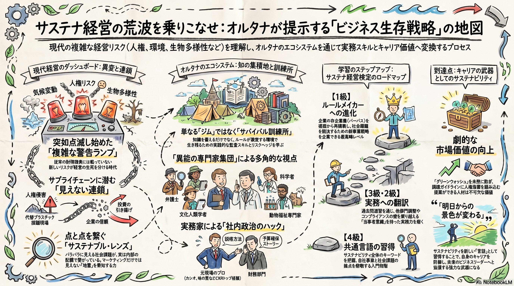
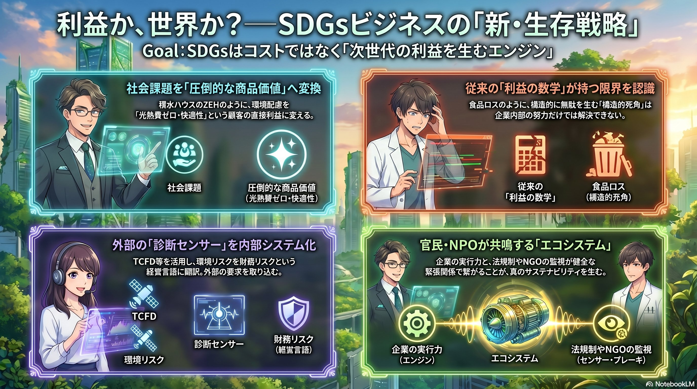

SDGsという言葉すらなかった時代に、
荒野に道を切り拓いた孤高の挑戦。
そして、集いし知の軌跡。

気候変動、人権、生物多様性——。従来の財務諸表には載っていない新しいリスクが、経営の生死を分ける時代。数字という共通言語だけでは、進むべき道が見えなくなった。
既存のビジネススクールのマニュアルや、いつもの経営コンサルタントでは即座に直せない。サプライチェーンに潜む「見えない連鎖」が企業の信頼を揺るがす。
社長からは「今四半期の利益目標を絶対に達成しろ」。人事・広報からは「サステナビリティの取り組みに時間を割け」。現場はこの「摩擦」の中で日々消耗している。
環境問題は「コスト」であり、ビジネスの中心にはなり得ないと誰もが信じていた。その常識に抗うため、ひとつの会社が立ち上がった。武器は「ペン」。サステナビリティを経営のど真ん中へ。
メディア(オルタナ本誌)・コミュニティ(SBL)・検定・塾・総研。5つのギアが連動し、知を実践へと変換する。これは単なる雑誌ではない。変革を志す者たちの「組織」である。


サステナ経営の「夜明け」を描くオルタナの足跡、「利益か社会か」のジレンマを解くテーゼ、そして現代経営者のための生存戦略スキル。3つのドキュメントが、未踏の領域への地図を描く。
オルタナの挑戦、サステナ経営の哲学、そして現場の声。3つのコンテンツで、エコシステムの呼吸を体感する。
誰も見向きもしなかった荒野に道を切り拓いてから約20年。社会はようやく、彼らの描いた青写真に追いつこうとしている。だが、オルタナの挑戦はここで終わらない。次の未踏の領域へ、旅は続く。
VISIT ALTERNA.CO.JP